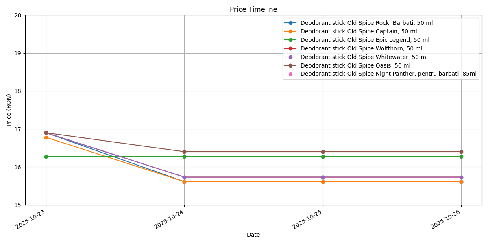

Project Overview
This Python-based eMAG price tracker scrapes product names and prices, tracks changes over time, and visualizes trends in charts. The AI integration provides analysis of price behavior and predictions for future price movements.
Features
- Scrape product data from eMAG.ro
- Store data in CSV/Excel
- Track price changes over time
- Generate visual charts of price trends
- AI-powered analysis and predictions
Chart Showcase
Example chart showing price trends:

AI Analysis Example
The AI analyzes tracked prices to summarize trends, highlight items with most changes, and predict future behavior. Example prompt used:
Here is a list of items and their prices changes over time:
[Sample data]
Analyze trends and predict possible next moves.
Video Demonstration
Video demonstrates project in action.